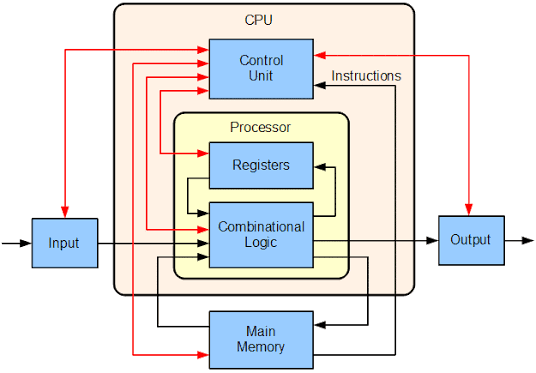

Data Structure and Algorithm
Notes on arrays, linked lists, trees, graphs, hashing, sorting, searching, dynamic programming, and algorithmic strategies, with attention to correctness and time-space complexity...

Computer Organization and Design
A study of how computers execute programs, covering instruction sets, processor datapaths, pipelining, memory hierarchy, caches, I/O systems, and performance analysis...
Operating System
Notes on processes, threads, scheduling, synchronization, virtual memory, file systems, system calls, and the abstractions that let programs share hardware safely and efficiently...
Computer Network
An introduction to network layers, packet switching, TCP/IP, routing, congestion control, sockets, DNS, HTTP, and the design principles behind reliable communication...
Artificial Intelligence
Notes on search, optimization, knowledge representation, machine learning, neural networks, probabilistic models, and intelligent systems that learn from data and decisions...